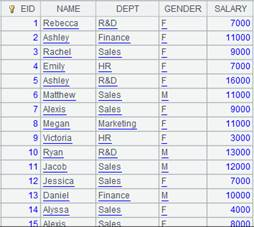

Description:
Return the result xi,¡. of executing a routine or a subroutine. Then the main program will terminate the execution to free up the resource.
Syntax:
return xi
Note:
With return, program will return the result xi. The program will by default return the last calculation cell value if no return/end statement appears when it is executed.Generally speaking, the returned result is a table sequence, a pure record sequence, or a cursor. Table sequence and pure record sequence are used as the esProc data set for a report, and cursor is used for the parallel program.
Example:
|
|
A |
B |
|
|
1 |
=demo.query("select NAME,GENDER from EMPLOYEE") |
|
|
|
2 |
=A1.select(GENDER=="M") |
=A1.select(GENDER=="F") |
A2
A3 
|
|
3 |
return A2, B2 |
|
A3 returns the two result sets: A2 and B2. When this esProc file is used for report creation, the two result sets can be used as data sources of the report. |
|
|
A |
|
|
1 |
=file("D://abc.txt") |
|
|
2 |
=A1.cursor() |
Get a cursor with retrieved data. |
|
3 |
return A2 |
A3 returns the cursor in A2. When using this esProc file in a parallel program, only the cursor created on the basis of binary file object sequence will be returned for the use in main program. |